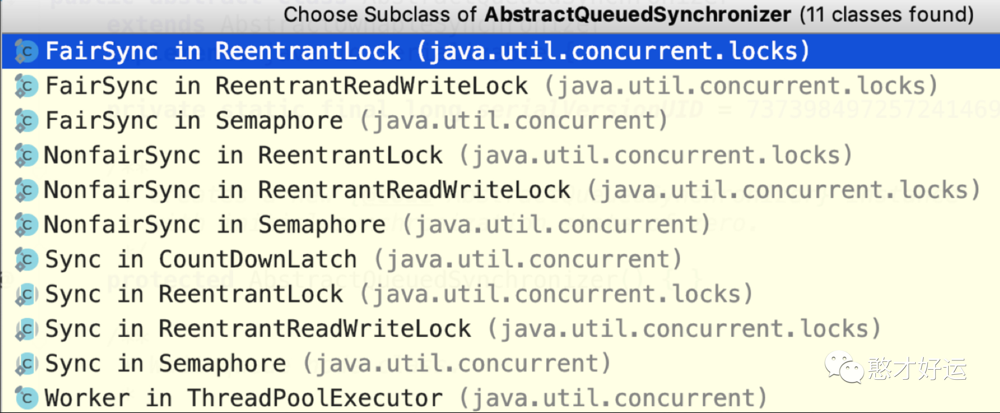
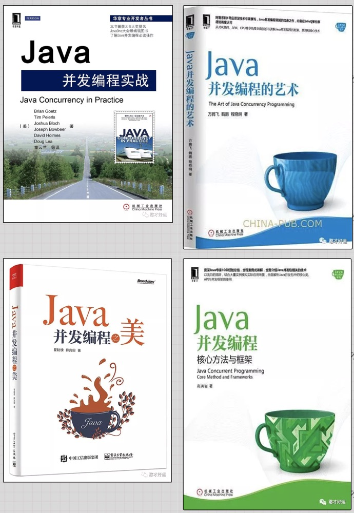

学习AQS的思路
AbstractQueuedSynchronizer是Doug Lea写的，简称AQS。从JDK 1.5加入的一个基于FIFO等待队列用于实现同步器的基础框架，学习AQS的目的主要是为了理解原理、提高技术以及应对面试。
先从应用层面理解为什么需要它、如何使用它；然后再看一看我们JUC的设计者是如何使用它来了解它的应用场景；最后我们再去分析它的结构，这样的话我们就学习的更加轻松了。
我们已经学过了ReentrantLock和Semaphore，有没有发现它们有共同点？很相似？事实上，不仅是ReentrantLock和Semaphore，包括CountDownLatch、ReentrantReadWriteLock都有这样类似"协作"(或者叫"同步")功能，其实，它们底层都用了一个共同的基类，这就是AQS，锁和协作类的共同点：闸门。
ReentrantLock、CountDownLatch和Semaphore等内部有一个Sync类，Sync类继承了AQS。
AQS是一个用于构建锁、同步器、协作工具类的工具类（框架），有了AQS，更多的协作工具类都可以很方便地被写出来。一句话总结：有了AQS，构建线程协作类就容易多了。
AQS的比喻：
Semaphore：一个人面试完了以后，后一个人才能进来继续面试；
CountDownLatch：群面，等待10个人到齐；
Semaphore和CountDownLatch这些同步工具类，要做的就是写在自己要人的规则。比如是"出一个，近一个"或者说"凑齐10个，一起面试"；
剩下的招呼面试者的脏活累活交给AQS来做；
AQS内部原理解析
AQS最核心的就是三大部分：
-
state；
-
控制线程抢锁和配合的FIFO队列；
-
期望协作工具类去实现的获取/释放等重要方法；
state状态
这里state的具体含义，会根据具体实现类的不同而不同，比如在Semaphore里，它表示"剩余的许可证的数量"；而在CountDownLatch里，它表示"还需要倒数的数量"；在ReentrantLock中用来表示锁的占有情况，包括可重入计数。当state的值为0的时候，标明该Lock不被任何线程所占有；
state是volatile修饰的，会被并发地修改，所以所有修改state的方法都需要保证线程安全，比如getState、setState以及compareAndSetState操作来读取和更新这个状态。这些方法都依赖juc.atomic包的支持；
控制线程抢锁和配合的FIFO队列
这个队列用来存放"等待的线程"，AQS就是"等待线程"，AQS就是排队管理器，当多个线程争用同一把锁时，必须有排队机制将那些没能拿到锁的线程串在一起。当锁释放时，锁管理器就会挑选一个合适的线程来占有这个刚刚释放的锁；
AQS会维护一个等待的线程队列，把线程都放到这个队列里，这是一个双向形式的队列；
期望协作工具类去实现获取/释放等重要方法
这里的获取和释放方法是利用AQS的协作工具类里最重要的方法，是由协作类自己去实现的，并且含义各不相同；
获取方法：获取操作会依赖state变量，经常会阻塞(比如获取不到锁的时候)；
释放方法：释放操作不会阻塞，在Semaphore中，释放就是release方法，作用是释放一个许可证；在CountDownLatch里面，释放就是countDown方法，作用是倒数1个数；还需要重写tryAcquire和tryRelease等方法；
AQS的用法
第一步：写一个类，想好协作的逻辑，实现获取/释放方法；
第二步：内部写一个Sync类继承AbstractQueuedSynchronizer；
第三步：根据是否独占来重写tryAcquire/tryRelease或tryAcquireShared(int acquires)/tryReleaseShared(int releases)等方法，在之前写的获取/释放方法中调用AQS的acquire/release或者Shared方法；
AQS在CountDownLatch的应用总结
调用CountDownLatch的await方法时，便会尝试获取"共享锁"，不过一开始是获取不到该锁的，于是线程被阻塞；
而"共享锁"可获取到的条件，就是"锁计数器"的值为0；
而"锁计数器"的初始值为count，每当一个线程调用该CountDownLatch对象的countDown()方法时，才将"锁计数器"减一；
经过count个线程调用CountDown()之后，"锁计数器"才为0，而前面提到的等待获取共享锁的线程才能继续执行；
AQS在Semaphore的应用
在Semaphore中，state表示许可证的剩余数量；
判断tryAcquire方法，判断nonfairTryAcquireShared大于等于0的话，代表成功；
这里会先检查剩余许可证数量够不够这次需要的，用减法来计算，如果直接不够，那就返回负数，表示失败。如果够了，就用自旋加compareAndSetState来改变state状态，知道改变成功返回正数；或者是期间如果被其他人修改了导致剩余数量不够了，那也返回负数代表获取失败；
AQS在ReentrantLock的应用
分析释放锁的方法tryRelease，由于是可重入的，所以state代表重入的次数，每次释放锁，先判断是不是当前持有锁的线程释放的，如果不是就抛出异常，如果是的话，重入次数就减一，如果减到了0，就说明完全释放了，于是free就是true，并且把state设置为0；
加锁的方法，判断当前state是否等于0，也会判断当前线程是不是当前持有锁的线程，如果都不是说明目前拿不到这把锁，就会被放在等待队列中，后续会在合适的时机被唤醒；
基于AQS实现一个一次性Latct门闩
1 | import java.util.concurrent.locks.AbstractQueuedSynchronizer; |
AQS补充材料
以下文章是关于AQS源码分析的，通常并不要求掌握，我找了一些优质学习资源，提供给小伙伴参考：
美团技术团队《从ReentrantLock的实现看AQS的原理及应用》
HongJie《一行一行源码分析清楚AbstractQueuedSynchronizer》
爱吃鱼的KK《AbstractQueuedSynchronizer 源码分析 (基于Java 8)》
并发编程参考书籍
关注【憨才好运】微信公众号，了解更多精彩内容⬇️⬇️⬇️